Chapter 0Before you start
How to read this manual
The manual has two parts. Part 1, Getting started, follows one tutorial case from entering the terrain to producing a check report. Work through Chapters 1 to 8 in order and you will have completed a basic slope stability analysis. Part 2, Advanced, introduces one feature per chapter. Each chapter starts with when you would use it, then shows how, so you can read only what you need.
The model file for each chapter can be downloaded and imported directly to skip the earlier steps. The file list is in Appendix C.
| Part | Ch. | Content | Example file |
|---|---|---|---|
| Getting started | 1 | Ground surface, layer boundaries and water table | tutorial-profile.csv |
| 2 | Soil parameters | ||
| 3 | Loads at the crest and toe | ||
| 4 | First calculation and reading the results | tutorial-1-slope.json | |
| 5 | Adding reinforcement (soil nails) | ||
| 6 | Normal, heavy rain and earthquake cases | tutorial-2-nails.json | |
| 7 | External stability of a retaining wall | tutorial-3-wall.json | |
| 8 | Producing the report and saving | tutorial-report.docx | |
| Advanced | 9 | Known slip surface locations: control points | Each chapter starts from tutorial-1-slope.json |
| 10 | Specified slip surfaces and circles (checking an old report) | ||
| 11 | Back-calculating soil parameters | ||
| 12 | Piezometric lines per layer and pore pressure ratio ru | ||
| 13 | Ponded water and tension cracks | ||
| 14 | Stabilizing piles, micropiles and geosynthetics | ||
| 15 | Calculation methods and search settings | ||
| 16 | Units, saving, verification report and versions |
What SSA does
SSA is a two-dimensional slope stability tool that runs in the browser. Nothing to install, and your data is never uploaded to a server. It uses dynamic programming (DP) to search for non-circular critical slip surfaces of any shape, and computes the factor of safety with the simplified Janbu, Spencer or Morgenstern–Price method. On top of that you can add:
- Surface loads (uniform, trapezoidal, line loads).
- Reinforcement: soil nails, ground anchors, stabilizing piles, micropiles and geosynthetics.
- Gravity, cantilever and counterfort retaining walls, including external stability checks.
- Several cases such as normal, heavy rain and earthquake, computed in one go and judged against the code.
- Calculation reports in Word or PDF.
Tutorial videos
Three tutorial videos follow the same case as this manual, and an introductory video explains what SSA is. They are narrated in Chinese, with English and Japanese subtitles available.
- IntroductionWhat SSA is
- Episode 1: Getting startedProfile, reinforcement, retaining wall, report (Chapters 1–8)
- Episode 2: Field dataSurface signs, inclinometers, back analysis, piezometric lines (Chapters 9–12)
- Episode 3: Special conditions and verificationPonded water, tension cracks, piles, methods, verification (Chapters 13–16)
Screen layout
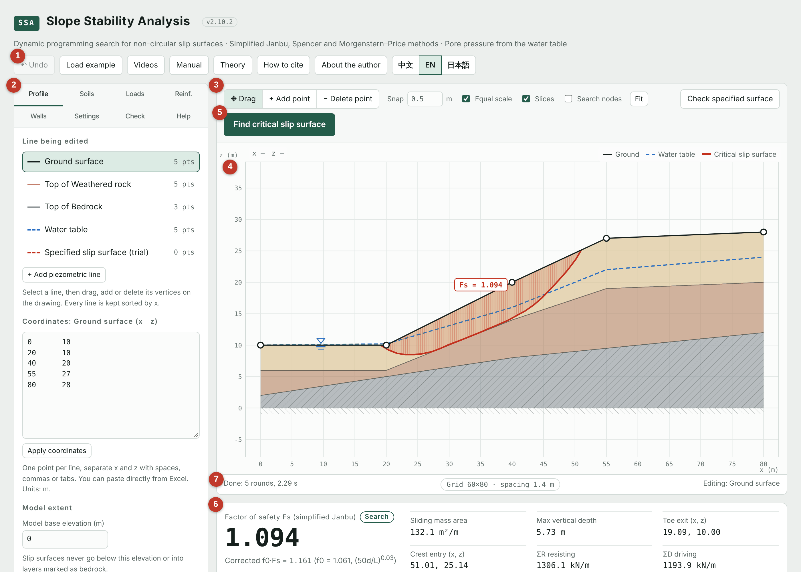
| No. | Area | Purpose |
|---|---|---|
| 1 | Top buttons | Undo (Ctrl+Z), Load example, this user manual, Theory, language switch. |
| 2 | Tabs | Profile, Soils, Loads, Reinf., Walls, Settings, Check, Help. Data is entered roughly in this order. |
| 3 | Toolbar | Drag, add or delete points on the drawing, snap spacing, show slices or search nodes, fit to window. |
| 4 | Profile drawing | Shows terrain, layers, water, loads, reinforcement and slip surfaces live, and can be edited with the mouse. |
| 5 | Calculation buttons | “Find critical slip surface” runs the automatic search; “Check specified surface” evaluates only the surface you specified. |
| 6 | Results | Factor of safety, sliding mass details, reinforcement forces and slice details. |
| 7 | Status bar | Calculation progress, messages and the search grid setting. |
Coordinates and units
- The profile uses x (horizontal, m) and z (elevation, m), with x increasing to the right. The slope may face left or right; the program detects it.
- Every line (ground, layer boundaries, water table) is a list of points sorted by x, joined by straight segments.
- Default units are kN, kPa and kN/m³. They can be switched to tf units on the Soils tab (Chapter 16).
- All forces and loads are per metre width.
Part 1
Getting started: your first check report
The example is a slope above a road. It is about 12.5 m high, with 4 to 6 m of colluvium at the surface over weathered rock and bedrock, and a road at the crest. The goal is to check the normal, heavy rain and earthquake cases under Taiwan's Soil and Water Conservation Technical Regulations, reinforce with soil nails where needed, add a retaining wall at the toe and produce a calculation report.
Chapter 1Ground surface, layer boundaries and water table
A profile consists of several lines: the ground surface, the top of each layer (boundary lines) and the water table. The tutorial data are below, in metres.
| Line | Points (x, z) |
|---|---|
| Ground surface | (0, 10) (10, 10) (35, 22.5) (50, 24) (70, 25) |
| Top of weathered rock | (0, 6) (15, 7.5) (35, 16) (70, 19) |
| Top of bedrock | (0, 2) (35, 9) (70, 12) |
| Water table | (0, 7) (15, 8.5) (35, 17) (70, 21) |
1.1 Method 1: paste the coordinates line by line
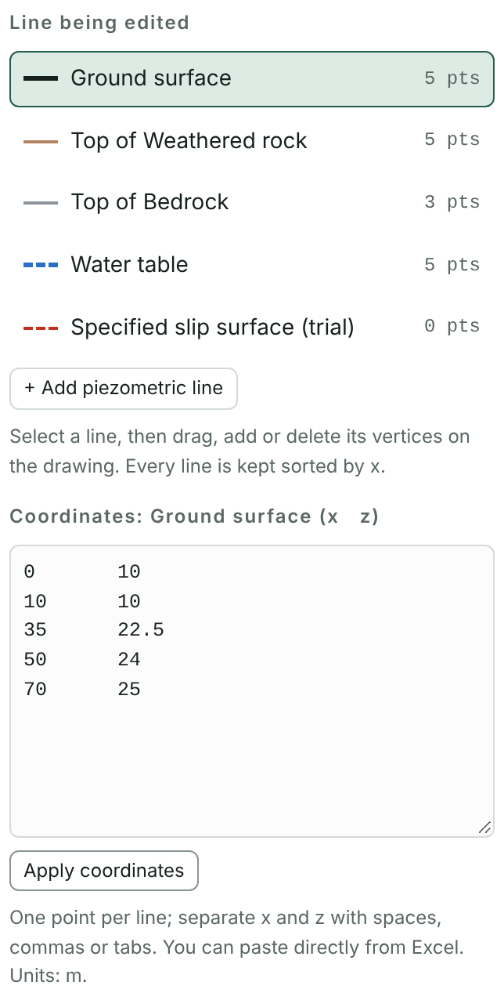
- Open the Profile tab and, under “Line being edited”, click Ground surface.
- Paste the ground points into the coordinate box below, one point per line, with x and z separated by a space, comma or tab. Two columns copied from Excel can be pasted directly.
- Press Apply coordinates. The drawing updates immediately.
- Click Top of Weathered rock, Top of Bedrock and Water table in turn and repeat steps 2 and 3.
- Check that Model base elevation under “Model extent” is 0 m. Slip surfaces never go below this elevation.
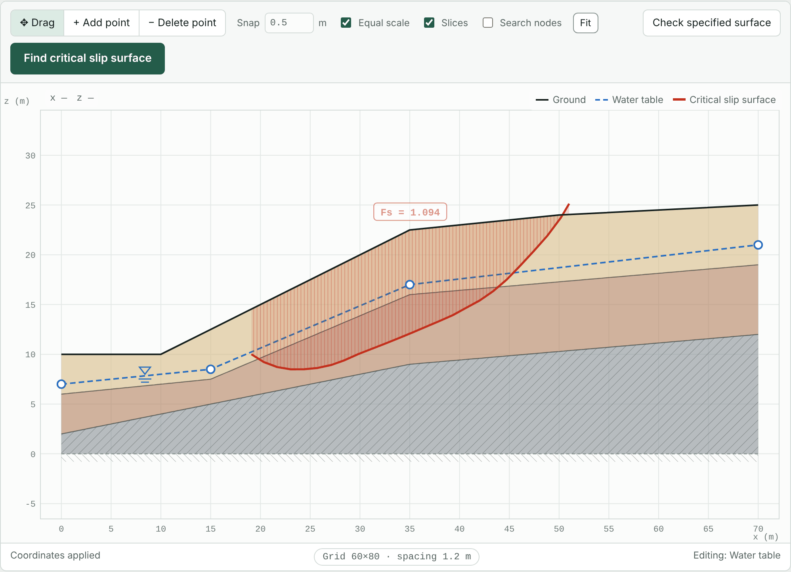
1.2 Method 2: import a CSV file in one step
Survey and borehole data are usually already in Excel, and a CSV import is the quickest route. Two layouts are accepted:
- Two columns (x, z): imported into the line currently selected.
- Three or more columns: column 1 is x, column 2 the ground elevation, and the following columns the tops of layers 2, 3 and so on. A column whose name contains “water” is read as the water table. Leave a cell empty where a line has no value at that x.
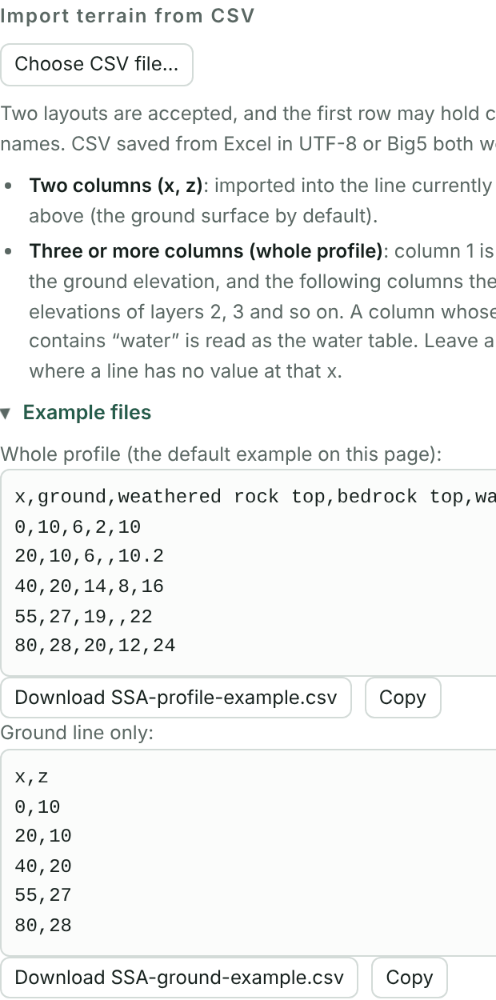
The tutorial CSV (tutorial-profile.csv) contains:
x,Ground,Top of weathered rock,Top of bedrock,Water table 0,10,6,2,7 10,10,,, 15,,7.5,,8.5 35,22.5,16,9,17 50,24,,, 70,25,19,12,21
- Arrange the data in Excel as above and save as CSV (UTF-8).
- On the Profile tab, press Choose CSV file… and select the file.
- The status bar reports how many points were imported, for example the ground surface with 5 points, 2 layer boundaries and the water table with 4 points.
1.3 Fine-tuning on the drawing
With a line selected, you can edit it on the drawing:
- In Drag mode, drag a vertex to move it. Positions snap to the spacing set in “Snap” (0.5 m by default; 0 turns snapping off).
- In Add point mode, click the drawing to add a vertex; in Delete point mode, click a vertex to delete it.
- To undo a mistake, press Undo at the top left or Ctrl+Z.
Chapter 2Soil parameters
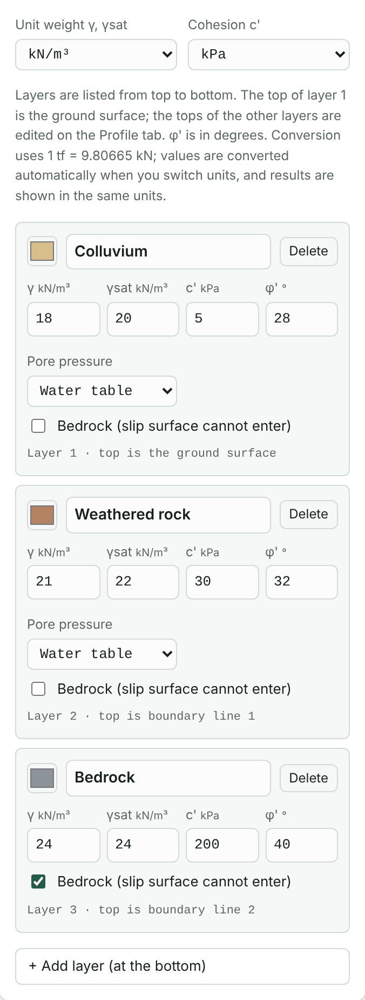
On the Soils tab, enter the parameters of each layer as below. Layers are listed from top to bottom, and the top of layer 1 is the ground surface.
| Layer | γ kN/m³ | γsat kN/m³ | c′ kPa | φ′ ° | Bedrock |
|---|---|---|---|---|---|
| Colluvium | 18 | 20 | 5 | 28 | |
| Weathered rock | 21 | 22 | 30 | 32 | |
| Bedrock | 24 | 24 | 200 | 40 | ✓ |
- γ and γsat: γ is used above the water table and the saturated unit weight γsat below it.
- c′ and φ′: effective stress strength parameters.
- Pore water pressure: “Water table” by default, i.e. hydrostatic pressure from the water table. Other options are in Chapter 12.
- Bedrock: when checked, slip surfaces do not enter the layer. Normally used for the hard bedrock at the bottom.
- Layer names and colours can be changed. The names appear in the line list on the Profile tab and in the report.
Chapter 3Loads at the crest and toe
The tutorial slope has a road at the crest. Traffic is a temporary load, modelled as a uniform load of 10 kPa over x = 36 to 44 m.
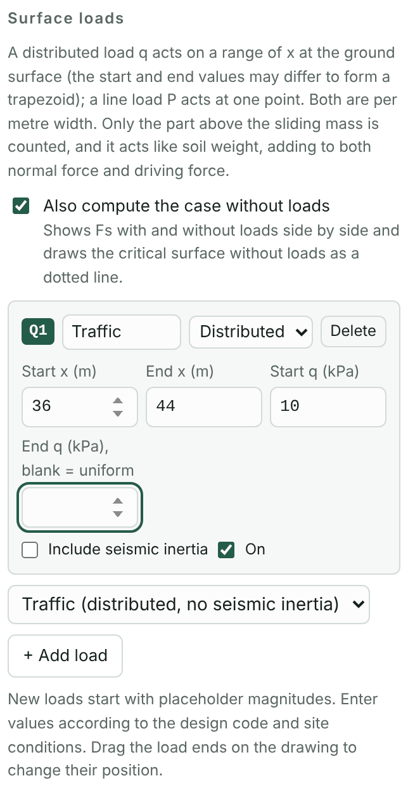
- On the Loads tab, choose Traffic (distributed, no seismic inertia) from the list and press + Add load.
- Set the start x to 36, the end x to 44 and the start q to 10. Leave the end q empty for a uniform load; a different value gives a trapezoidal load.
- Traffic is temporary, so leave “seismic inertia” unchecked. Permanent loads such as buildings and retaining structures should be checked.
Loads can also be moved by dragging their end points on the drawing. The intensity of a new load is a placeholder; change it to suit the design code and the site.
Crest versus toe
- A load at the crest (upslope) usually lowers the factor of safety.
- A load at the toe (downslope) usually raises it, the toe-weighting effect. Loads that may be removed, such as parked vehicles or temporary stockpiles, should not be used to raise the factor of safety.
- Check Also compute the case without loads at the top of the tab to list the Fs with and without loads side by side.
- Fill has its own strength and slip surfaces may pass through it. Model fill by editing the ground line and adding a fill layer, not as a load.
Chapter 4First calculation and reading the results
Press Find critical slip surface at the top right. The program searches the profile for the slip surface with the lowest factor of safety, usually in a few seconds.
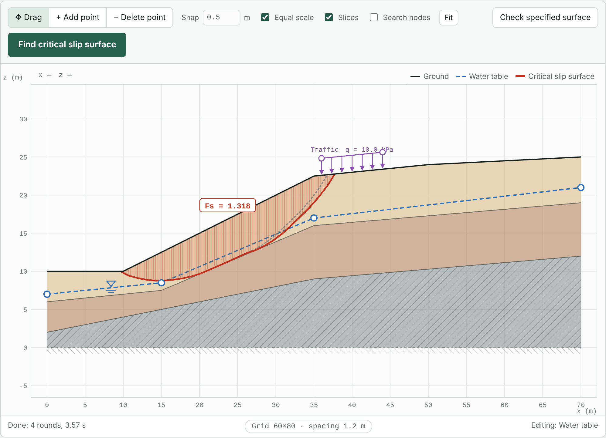
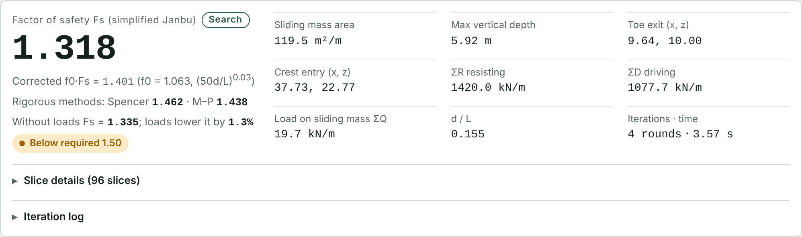
4.1 Reading the results
| Item | Meaning |
|---|---|
| Factor of safety Fs | The large number, 1.318 here. By default the uncorrected simplified Janbu value is used, as in the original SSA program, which is more conservative. |
| Corrected f0·Fs | The simplified Janbu value multiplied by the correction factor f0, for reference. To judge by it, check “Judge by the corrected f0·Fs” on the Settings tab. |
| Rigorous methods | Spencer and Morgenstern–Price results for the same slip surface (Chapter 15). |
| Fs without loads | Fs with all loads removed. Here 1.335, so the traffic load lowers Fs by 1.3%. |
| Required value | Comparison with the required factor of safety on the Settings tab (1.50 by default). Here “Below required”. |
| Sliding mass | Area, maximum vertical depth, toe exit and crest entry coordinates, and the sums of resisting and driving forces. |
| Slice details | Expand to see the width, weight, pore pressure, strength parameters and forces of every slice. Can be copied as CSV. |
The normal-condition Fs = 1.318 is below the 1.5 required by the Soil and Water Conservation Technical Regulations, so reinforcement is needed. Save the model before continuing (Section 8.3). The model at the end of this chapter is the example file tutorial-1-slope.json.
Chapter 5Adding reinforcement
Here a row of soil nails is installed in the slope face. Where a nail crosses the slip surface it provides a tensile force, the smallest of its tensile, pull-out and facing capacities, divided by the horizontal spacing to give a force per metre width.
5.1 Method and the first soil nail
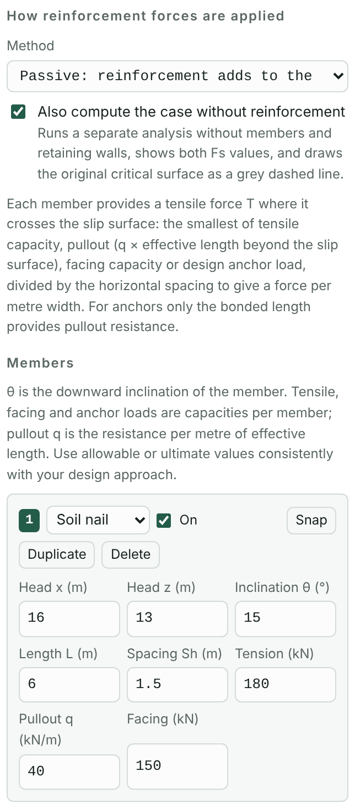
- On the Reinf. tab, set Method to Passive: reinforcement adds to the resistance. Soil nails usually use the passive method, which is more conservative; prestressed anchors usually use the active method.
- Make sure Also compute the case without reinforcement is checked, so the Fs before and after reinforcement are listed side by side.
- Press + Soil nail to add one, and change its length L to 6 m. The other fields are listed below.
| Field | Meaning | Here |
|---|---|---|
| Head x, z | Position of the nail head; “Snap” moves it to the ground surface | Set by Place a row |
| Inclination θ | Downward inclination (°) | 15 |
| Length L | Nail length (m) | 6, later 9 |
| Spacing Sh | Horizontal spacing perpendicular to the profile (m) | 1.5 |
| Tensile | Allowable tensile force per nail (kN) | 180 |
| Pull-out q | Pull-out resistance per metre of effective length (kN/m) | 40 |
| Facing | Capacity of the facing or head (kN) | 150 |
5.2 Place a row
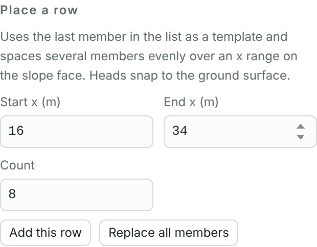
- Under “Place a row”, enter start x = 16, end x = 34 and count 8.
- Press Replace all members. Using the last nail in the list as a template, the program spaces 8 nails evenly along this part of the slope with their heads snapped to the ground.
- Press Find critical slip surface.
“Add this row” keeps the existing members and adds another row, useful for several rows of different lengths.
5.3 Trying and adjusting
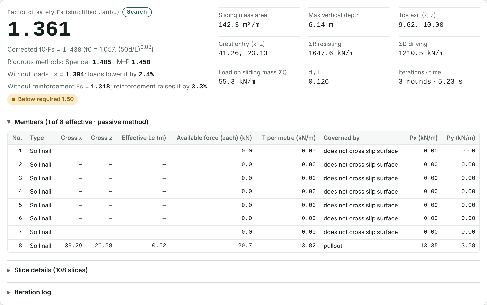
Most 6 m nails extend only a short way beyond the slip surface, so their pull-out capacity is limited and Fs only rises from 1.318 to 1.361. In the table, the effective length Le is the length beyond the slip surface, and the “Governed by” column shows whether tensile, pull-out or facing capacity controls.
Change the length of the last nail in the list to 9 m, then press Replace all members and Find critical slip surface again:
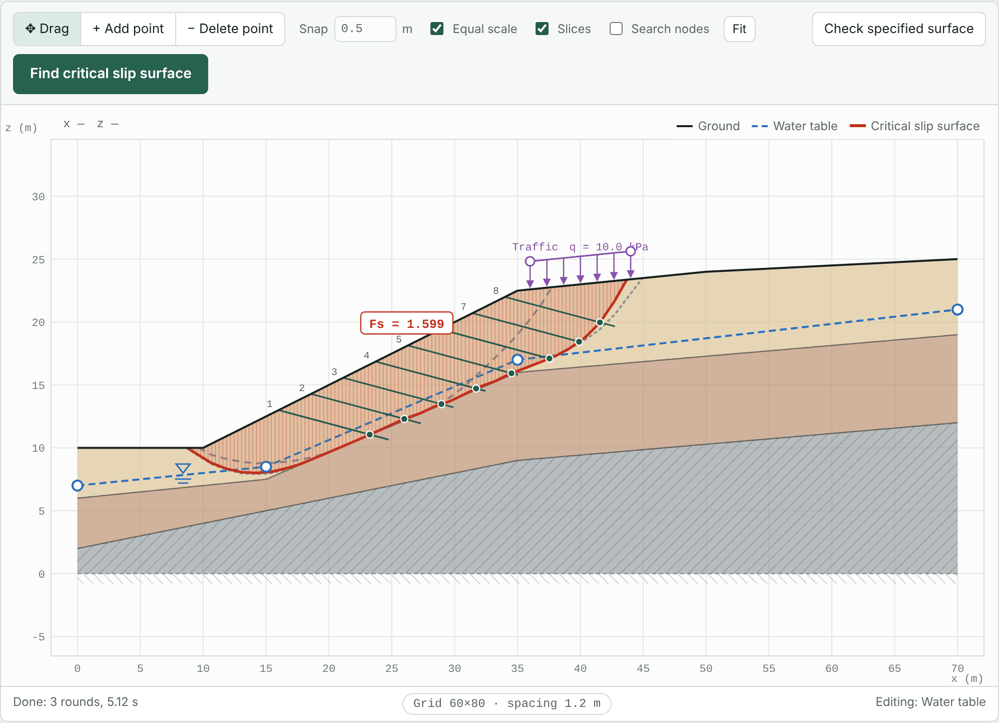
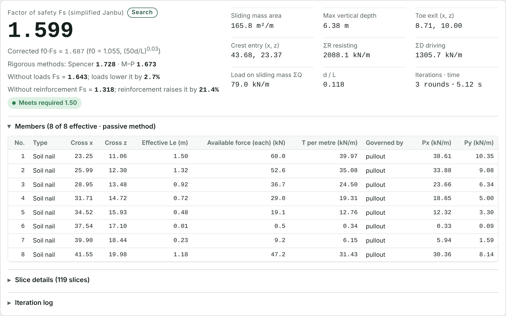
Chapter 6Normal, heavy rain and earthquake cases
Chapter 5 checked only the current conditions (normal). The code also requires heavy rain and earthquake cases, each with its own required factor of safety. The Check tab sets up several cases and computes them with one click.
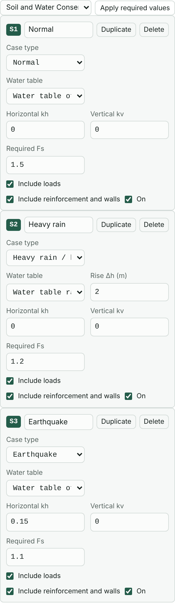
- Open the Check tab. The list at the top defaults to Soil and Water Conservation Technical Regulations Art. 73, permanent, with required factors of safety of 1.5, 1.2 and 1.1 for the three cases. To use another code, select it and press “Apply required values”.
- S2 Heavy rain: set the water table to “Water table raised by Δh” and enter Δh = 2 m. The raised water table never goes above the ground surface.
- S3 Earthquake: enter the horizontal seismic coefficient kh = 0.15 and leave the vertical coefficient kv at 0.
- Press Compute all cases. Each case searches for its own critical slip surface.
Each case card can also set:
- Case type: normal, heavy rain / high water, or earthquake. “Apply required values” fills in the required factor of safety by type, and the retaining wall checks also use the normal or seismic requirements by type.
- Water table: profile water table, raised by Δh, water table at ground, or no groundwater.
- Include loads, Include reinforcement and walls: can be turned off separately to study load removal or reinforcement failure.
- “Copy” quickly creates a similar case, for example for a sensitivity analysis with different Δh.
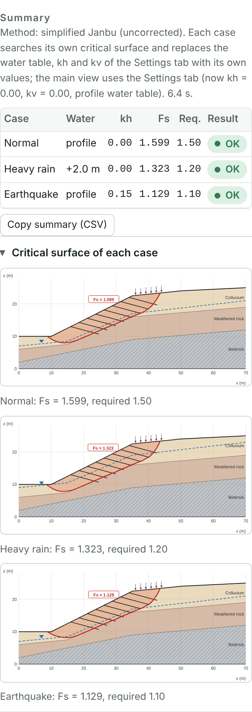
All three cases pass: normal 1.599 ≥ 1.5, heavy rain 1.323 ≥ 1.2, earthquake 1.129 ≥ 1.1. The summary can be copied to Excel with “Copy summary (CSV)”, and the report includes this table and the slip surface of each case. The model at this point is tutorial-2-nails.json.
Chapter 7External stability of a retaining wall
Suppose a gravity retaining wall is built at the toe, with the backfill forming a platform for slope drainage and maintenance access. SSA checks a retaining wall in two ways:
- External stability: the wall is treated as a rigid body and checked for sliding, overturning, eccentricity (resultant position) and bearing capacity. Results update as soon as a dimension changes.
- Global stability: the wall is treated as an impenetrable structure with weight, and slip surfaces passing under or behind it are searched.
Adjust the dimensions until external stability passes, then confirm global stability. Structural design of the stem and base, such as reinforcement, is outside the scope of this tool.
7.1 Editing the ground line
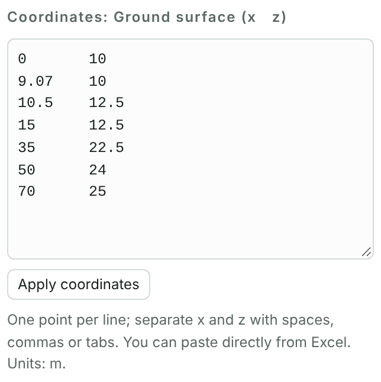
The ground line must reach the top of the wall and include the backfilled platform. On the Profile tab, select the ground surface and change the points to:
0 10 9.07 10 10.5 12.5 15 12.5 35 22.5 50 24 70 25
(9.07, 10) to (10.5, 12.5) is the front face of the wall, and (10.5, 12.5) to (15, 12.5) the wall top and the platform behind. The road in front is at 10 m and the wall base at 9 m, giving 1 m of embedment.
7.2 Choosing the code and adding a wall
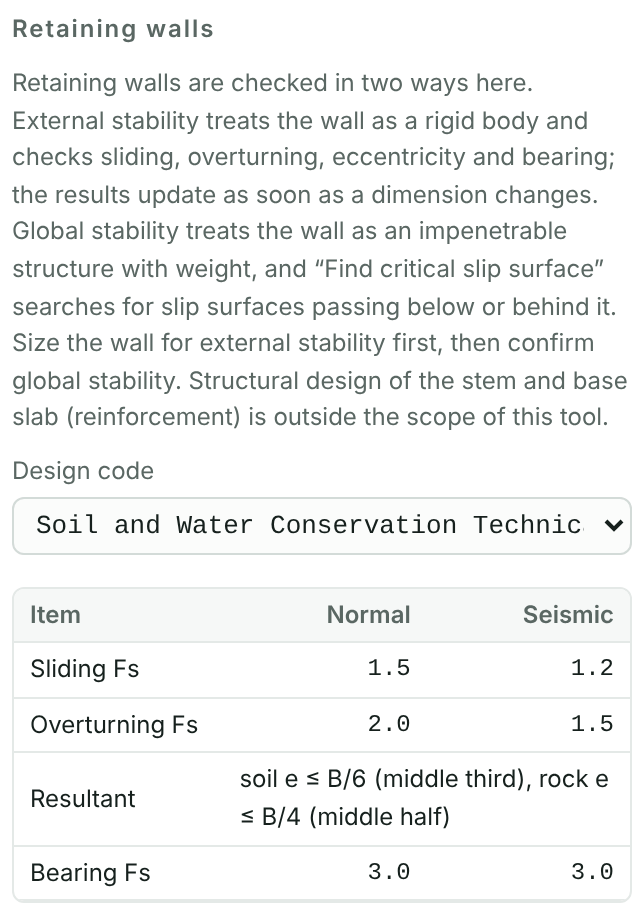
Open the Walls tab. Design code defaults to the Soil and Water Conservation Technical Regulations Art. 120. The Building Foundation Structure Design Code or the Highway Bridge Design Code can be chosen instead, and the table below lists their requirements.
| Code | Sliding | Overturning | Resultant | Bearing |
|---|---|---|---|---|
| Soil and Water Conservation Technical Regulations Art. 120 | 1.5 / 1.2 | 2.0 / 1.5 | Soil e ≤ B/6, rock e ≤ B/4 | 3.0 / 3.0 |
| Building Foundation Structure Design Code Sec. 7.4 | 1.5 / 1.2 | 2.0 / 1.5 | Within the base | 3.0 / 2.0 |
| Highway Bridge Design Code Sec. 6.2.8 | 1.5 / 1.2 | 2.0 / 1.5 | Within the base | 3.0 / 2.0 |
Normal / seismic. These are Taiwanese codes; check the latest edition before use.
Press + Gravity to add a retaining wall and enter its dimensions as in the next section. The three buttons add gravity, cantilever and counterfort walls, and the type can also be changed on the card afterwards.
7.3 Entering the dimensions
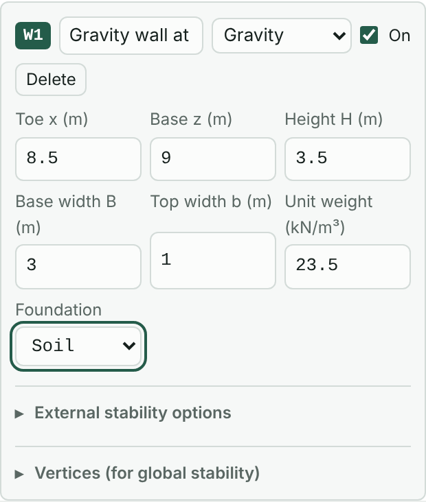
| Field | Meaning | Here |
|---|---|---|
| Toe x | x of the front (outer) edge of the base | 8.5 |
| Base z | Elevation of the base | 9 |
| Height H | From base to top | 3.5 |
| Base width B | Width of the base | 3.0 |
| Top width b | Width of the top (gravity wall) | 1.0 |
| Unit weight | Unit weight of the wall | 23.5 kN/m³ |
| Foundation | Soil or rock; sets the allowable range of the resultant | Soil |
A gravity wall has a vertical back and a battered front. Cantilever and counterfort walls also have base thickness, toe length and stem top and bottom thickness, and counterfort walls add counterfort spacing and thickness. The wall direction follows the slope automatically, with the toe always on the outer side.
7.4 Reading the check results
Once the dimensions are entered, “External stability” below lists the results for each case. The columns are the cases enabled on the Check tab, and the water table, seismic coefficients and loads follow each case.
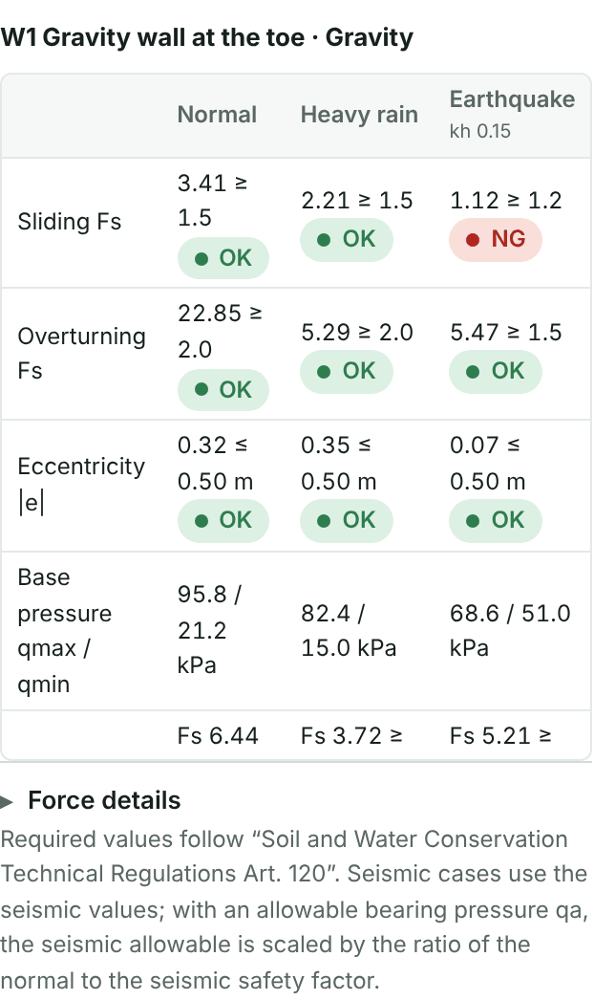
Normal and heavy rain pass, but the seismic sliding safety factor of 1.12 is not enough. Options include a wider base, a shear key, or counting the passive pressure in front of the wall. Here the road in front gives 1 m of embedment and the roadbed will stay in place, so the passive pressure in front of the wall is counted:
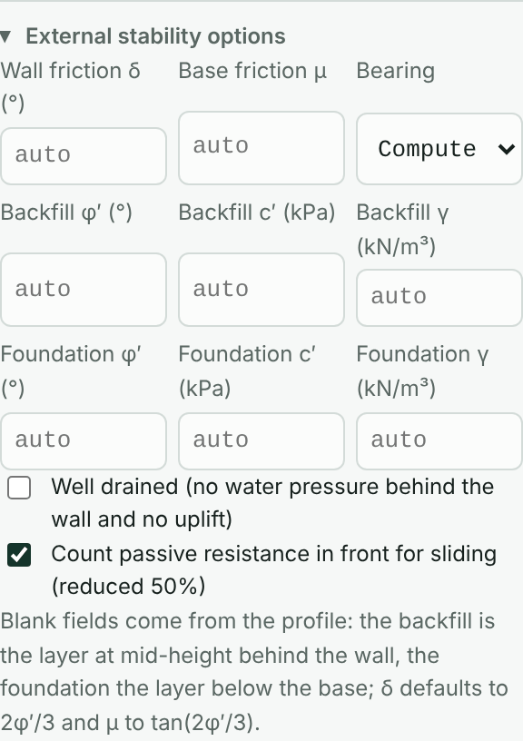
- Expand External stability options on the card.
- Check Count passive resistance in front for sliding (reduced 50%).
The other options here:
- Wall friction angle δ: for gravity walls; 2φ′/3 when left blank.
- Base friction μ: tan(2φ′/3) when left blank, with φ′ of the foundation soil. Enter a value if you have test data.
- Bearing capacity: the ultimate bearing capacity from the Meyerhof formula by default, or enter an allowable bearing capacity qa.
- φ′, c′, γ of the backfill and foundation soil: when blank, taken from the layers at mid-height behind the wall and below the base. Specify them here when the backfill is a well-graded fill material.
- Well drained: when checked, no water pressure behind the wall and no uplift on the base.
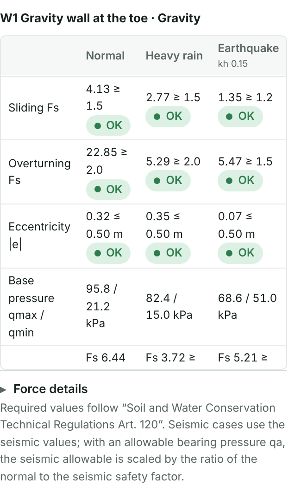
Expand “Force details” to see the backfill and foundation parameters, earth pressure coefficients, earth pressure resultants and their heights, water pressure and uplift, weights, moments and the ultimate bearing capacity, for checking by hand. While the Walls tab is open, the drawing shows the wall weight W, the earth pressure Pa, the middle third of the base and the resultant position.
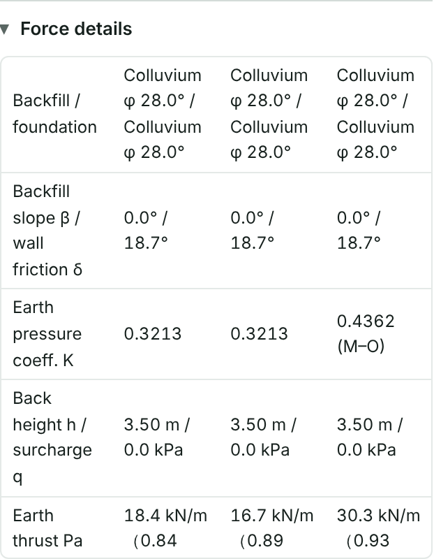
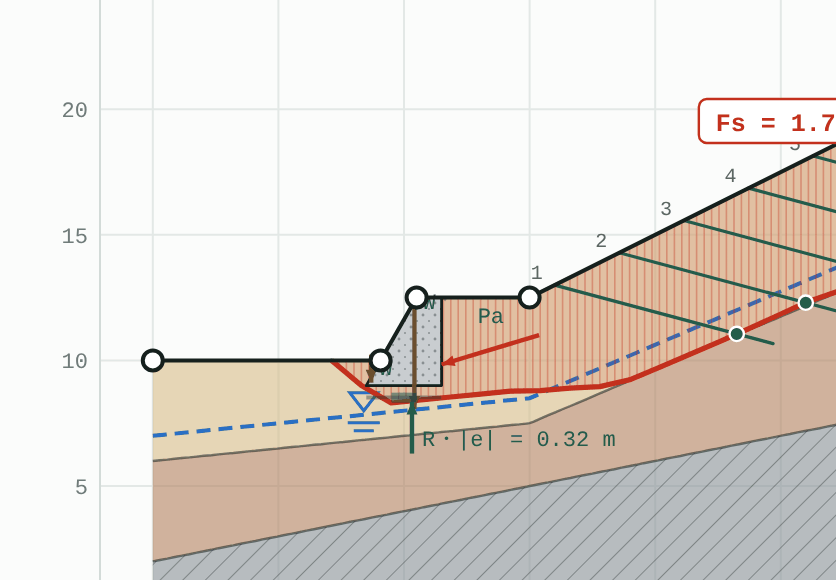
7.5 Confirming global stability
Once external stability passes, press Find critical slip surface, then Compute all cases on the Check tab. The wall now counts as a structure, and slip surfaces can only pass under or behind it.
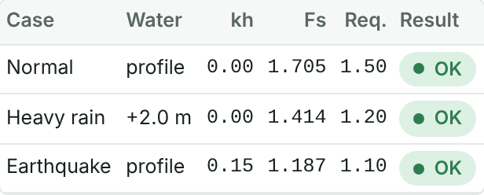
The toe weight of the wall raises the Fs of all three cases a little further. The model at this point is tutorial-3-wall.json.
Chapter 8Producing the report and saving
8.1 Report details
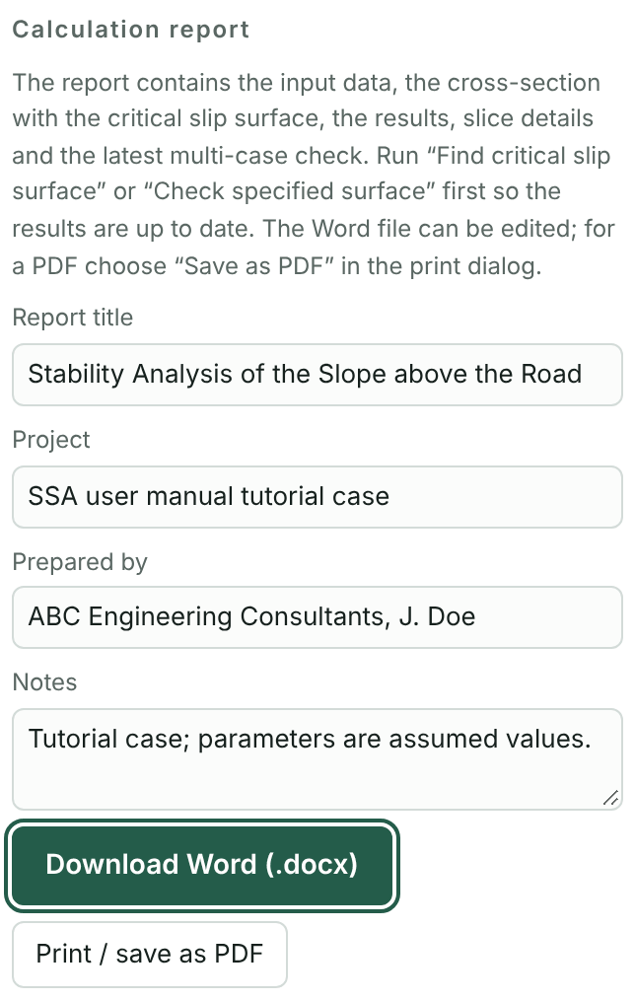
- Make sure the main view and the Check tab show up-to-date results. After the model changes, the results area says they are out of date.
- Under Calculation report at the bottom of the Check tab, enter the report title, project name, analyst and notes.
- Press Download Word (.docx), or press Print / save as PDF and choose “Save as PDF” in the print dialog.
The Word file can be edited directly, for example to apply a company template or add explanations.
8.2 What the report contains
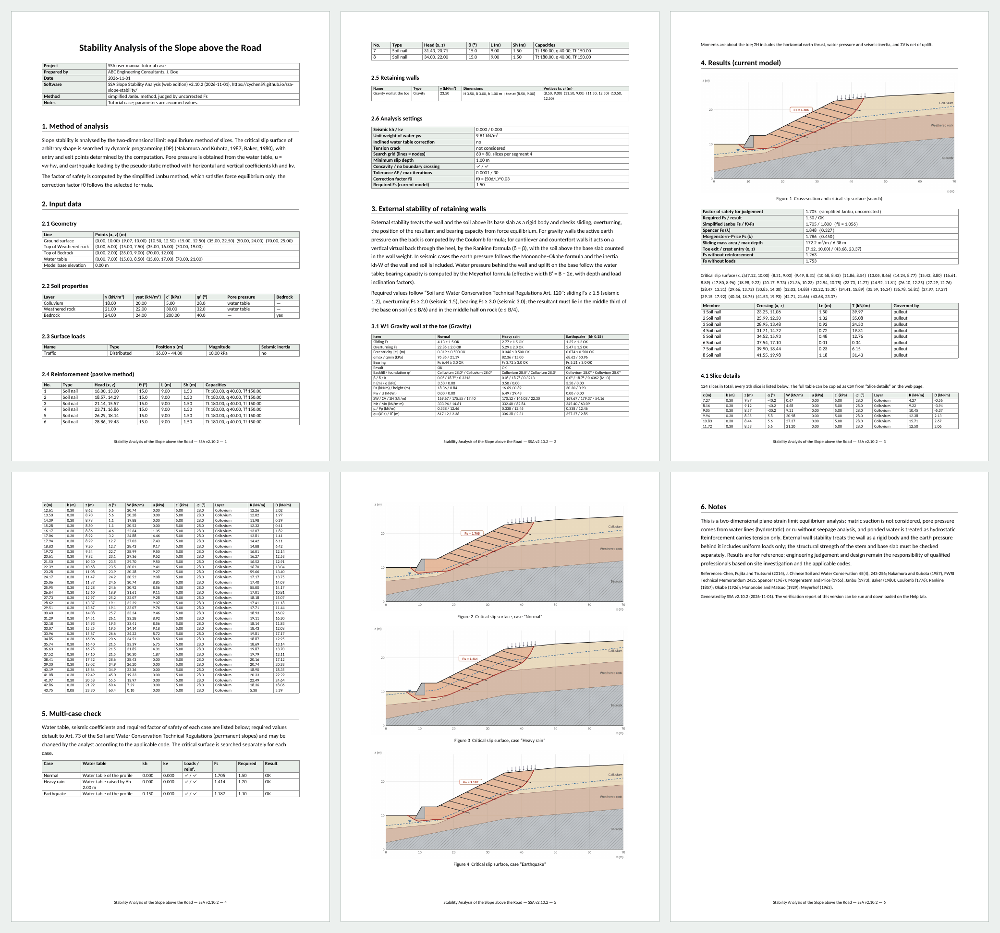
| Section | Content |
|---|---|
| Cover details | Project, analyst, date, program version and URL, calculation method. |
| 1. Method | The method used and how pore pressure and seismic forces are handled. |
| 2. Input data | Profile geometry, soil parameters, loads, reinforcement, retaining walls and analysis settings. |
| 3. External stability of retaining walls | Only when there is a wall. Method, requirements, the check table for each case and force details. |
| 4. Results | Profile with the critical slip surface, factor of safety, reinforcement forces and slice details. |
| 5. Multi-case check | Only when cases have been computed. Summary table and the slip surface of each case. |
| 6. Notes | Limitations, references and program version. |
Section numbers adjust to the content. The complete tutorial report is available as Word or PDF.
8.3 Saving and resuming
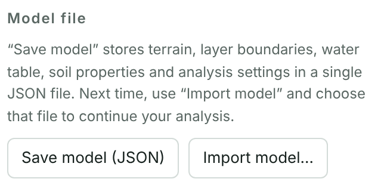
The model is not kept after the page closes, so remember to save.
- Under Model file at the bottom of the Settings tab, press Save model (JSON). The file holds the terrain, layers, water, loads, reinforcement, walls, cases and all settings.
- Next time, press Import model… and choose the file to carry on.
You can also expand “Copy or paste JSON as text” to paste the model into an email or notes.
Part 2
Advanced: features for particular situations
“When to use it” at the start of each chapter describes the situations. Unless noted otherwise, each chapter starts from the Chapter 4 model tutorial-1-slope.json (no reinforcement); load it with “Import model…” on the Settings tab.
Chapter 9Known slip surface locations: control points
When to use it
For a slope that has failed or is moving, field data often show where the slip surface is: shear depths from inclinometers or TDR, shear zones in borehole cores, the head scarp at the crest and bulging at the toe. The automatic “most critical” surface is then not necessarily the one actually moving. Make the search pass through these known locations, and base the reinforcement design or back analysis on that surface.
In the tutorial case, suppose inclinometer BH-1 at x = 28 m in the middle of the slope shows clear shearing 8 m below the ground.
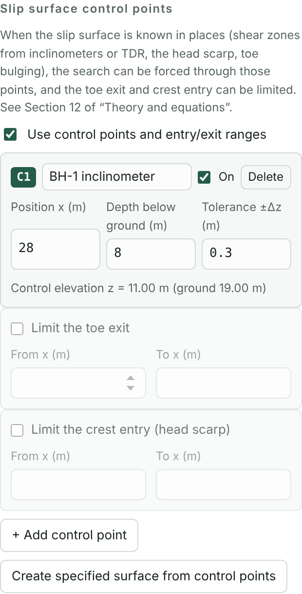
- Under Slip surface control points on the Profile tab, check Use control points and entry/exit ranges.
- Press + Add control point. Enter the borehole name, position x = 28, depth below ground = 8 and tolerance ±Δz = 0.3 m. The program converts and shows the control elevation z = 11 m.
- Press Find critical slip surface. Only slip surfaces passing z = 11 ± 0.3 m at x = 28 m are accepted.
Two further options limit the ends of the slip surface:
- Limit the toe exit: where the toe bulges, water seeps out or a retaining wall deforms.
- Limit the crest entry (head scarp): where there are tension cracks or a scarp at the crest.
You can add several control points, for example several inclinometers along the main survey line. Create specified surface from control points joins the control points and the entry and exit into one slip surface and places it in the specified slip surface, as a starting point for Chapters 10 and 11.
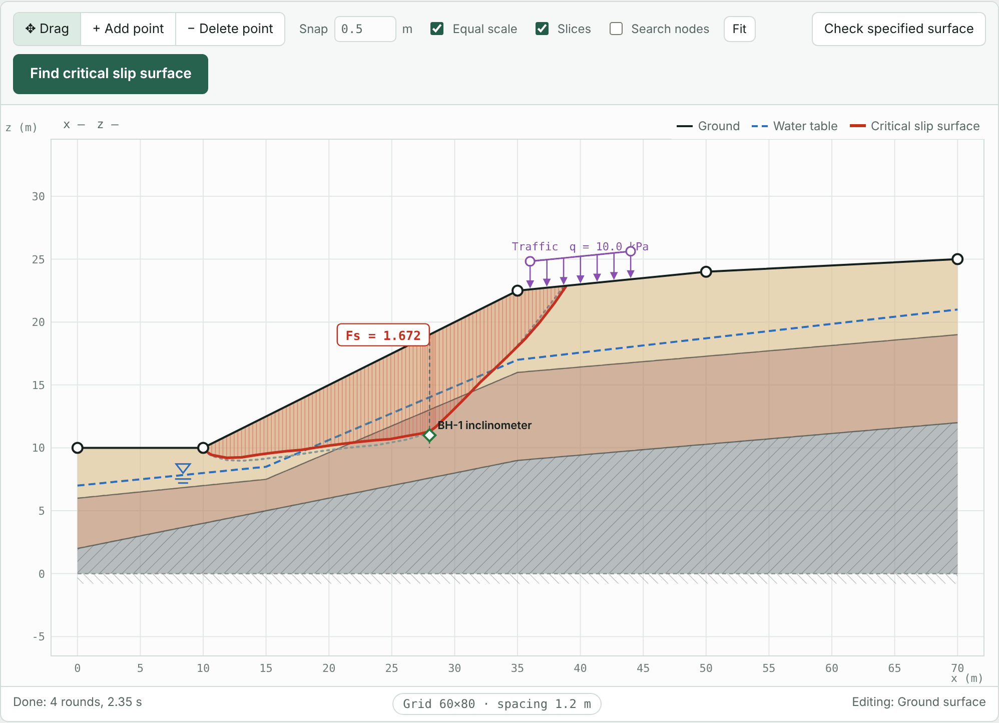
Here the surface through the control point has Fs = 1.672, much higher than the 1.318 of the free search. If the slope really is moving along an 8 m deep surface, the strength on site must be lower than assumed, or the water higher. Back-calculate on this surface (Chapter 11) and design the reinforcement with the back-calculated parameters instead of the free-search result.
Chapter 10Specified slip surfaces and circles
When to use it
- Reviewing an old report or another program's calculation by recomputing the same slip surface.
- Computing the factor of safety of an actual failure surface obtained by survey, or back-calculating from it.
- Finding the Fs of one particular surface without a search.
The specified surface is Specified slip surface (trial) in the line list on the Profile tab. There are five ways to create it:
- Paste points into the coordinate box and press “Apply coordinates”.
- Click the points one by one on the drawing in “Add point” mode.
- After a calculation, press Copy current critical surface and edit it.
- Enter a centre and radius to generate a circle (shown in this chapter).
- Create it from control points (Chapter 9).
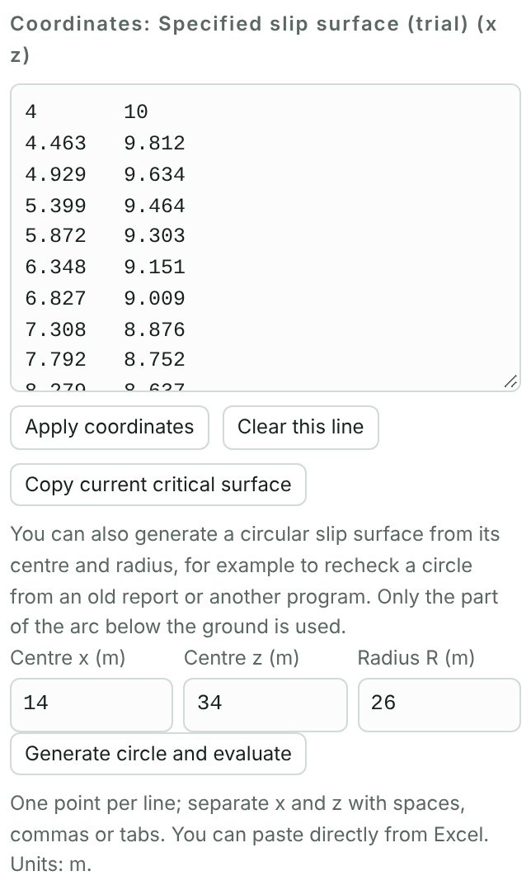
Suppose an old report used a circle centred at (14, 34) with a radius of 26 m:
- On the Profile tab, click Specified slip surface (trial).
- Below the coordinate box, enter centre x = 14, centre z = 34 and radius R = 26.
- Press Generate circle and evaluate. The program keeps the part of the circle below the ground, converts it to points in the coordinate box and evaluates it at once.
After changing other conditions, press Check specified surface on the toolbar to recompute this circle. The report records the centre and radius.
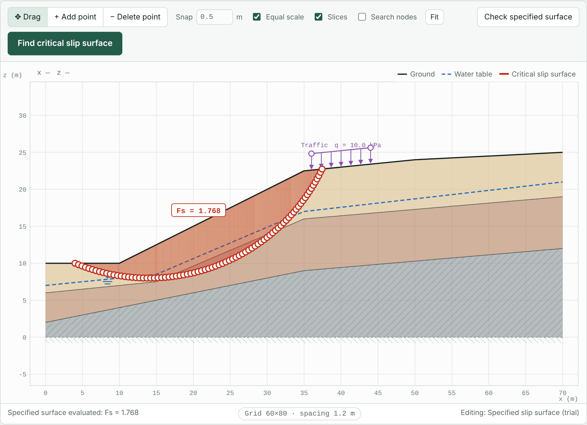
Chapter 11Back-calculating soil parameters
When to use it
When a slope has failed or is moving, Fs at failure can be taken as about 1.0 and the strength parameters back-calculated. Back-calculated parameters reflect the actual state on site and are often better suited to remediation design than test values.
Suppose the tutorial slope failed along the original critical surface after heavy rain, with the water table about 2 m above the profile water table.
- Press Find critical slip surface, click Specified slip surface on the Profile tab and press Copy current critical surface. In practice, use the actual surface from a survey or control points here.
- Change the water table to the level at the time of failure: (0, 9) (15, 10.5) (35, 19) (70, 23).
- Press Check specified surface; here Fs = 1.069.
- Under Back analysis on the Settings tab, set the layer to automatic (the layer the surface crosses for the longest distance), the parameter to Friction angle φ′ (c′ fixed) and the target Fs to 1.
- Press Back-calculate.
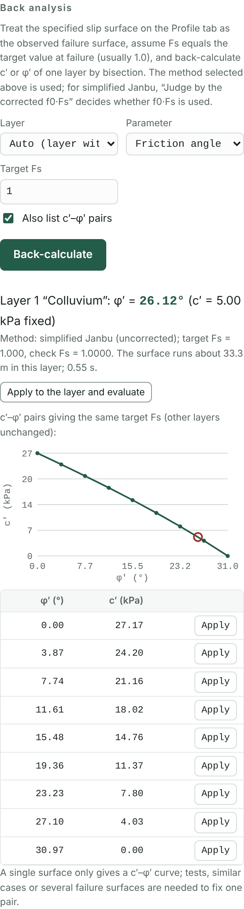
Fs is exactly 1.000 when φ′ of the colluvium is 26.12° (with c′ = 5 kPa fixed). Apply to the layer and evaluate writes the value back to the Soils tab.
With “Also list c′–φ′ pairs” checked, the program draws every c′ and φ′ pair that gives Fs = 1. One slip surface defines only one curve and cannot fix both c′ and φ′, so either:
- fix one of them from tests, nearby cases or experience, for example a very small c′ for colluvium; or
- intersect two or more failure surfaces (different times or sections).
Chapter 12Piezometric lines per layer and pore pressure ratio ru
When to use it
- Piezometric lines per layer: when layers have different heads, for example ordinary groundwater in the colluvium above a confined aquifer in the weathered rock or gravel below. The head measured by a piezometer is higher than the water table and may even flow out at the toe.
- Pore pressure ratio ru: when there are no water table data, or where codes express pore pressure in fills or spoil areas as ru.
- None: layers known to be dry or well drained.
12.1 Piezometric lines per layer
Suppose borehole BH-2 in the tutorial case measured a confined head in the weathered rock close to the ground surface, and above the ground at the toe.
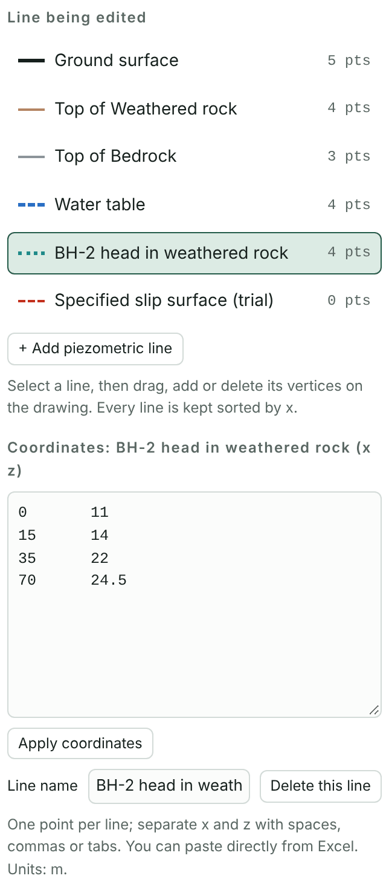
- On the Profile tab, press + Add piezometric line. The new line starts as a copy of the water table and becomes the line being edited.
- Paste (0, 11) (15, 14) (35, 22) (70, 24.5) into the coordinate box and press Apply coordinates.
- Enter “BH-2 head in weathered rock” as the line name.
- On the Soils tab, set the pore water pressure of Weathered rock to “BH-2 head in weathered rock”.
- Press Find critical slip surface.
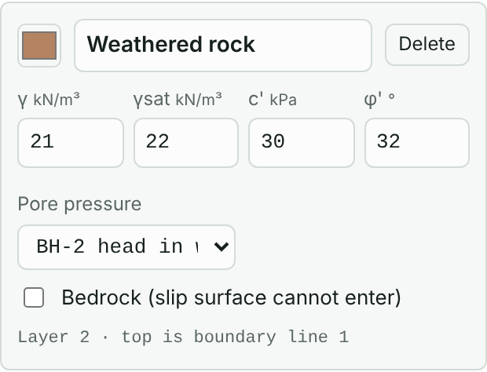
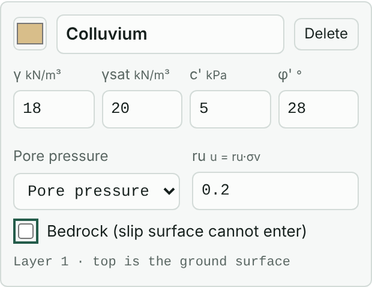
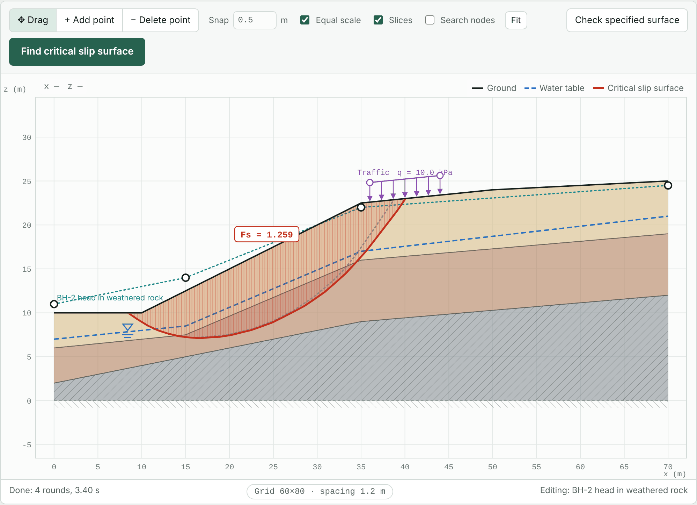
With higher pore pressure in the weathered rock, the critical surface cuts into it and the maximum depth goes from 5.9 m to 8.6 m. The soil parameter table in the report lists which pore pressure each layer uses.
12.2 Pore pressure ratio ru
Select “Pore pressure ratio ru” and enter a value. The pore pressure of the layer is then u = ru·σv, where σv is the total stress of the soil column above the slip surface. ru is commonly 0.1 to 0.5, chosen from the code or experience.
Chapter 13Ponded water and tension cracks
When to use it
- Ponded water: slopes along rivers, reservoirs or detention ponds, or where water ponds at a poorly drained toe. The weight and pressure of the outside water help stability, but rapid drawdown can be unfavourable.
- Tension cracks: when the crest already has tension cracks, or cohesive soil with a large c′ may crack at the crest. Soil within the crack depth provides no shear strength, and a water-filled crack adds a horizontal thrust.
13.1 Ponded water
No special setting is needed. Draw the water table above the ground surface, and the part above ground is treated as ponded water, shown in light blue. The weight of the ponded water acts on the tops of the slices, and the horizontal component of the water pressure on the slope face resists sliding. The results list the ponded water thrust separately.
Here the river in front of the toe is assumed at 13 m, 3 m above the road at the toe: change the water table to (0, 13) (16, 13) (35, 17) (70, 21).
13.2 Tension cracks
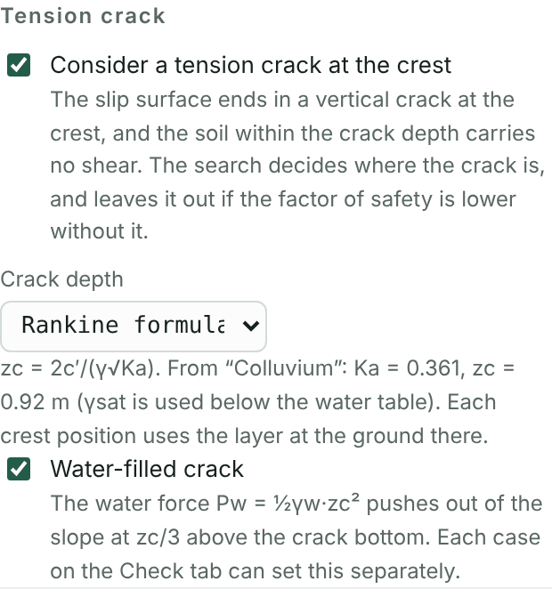
- On the Settings tab, check Consider a tension crack at the crest.
- With Crack depth set to “Rankine formula”, zc = 2c′/(γ√Ka) is computed from the layer at the crest and shown below; or choose “Specified depth” and enter it.
- With Water-filled crack checked, the water force Pw = ½γwzc² pushes horizontally out of the slope.
The search decides where the crack is, and leaves it out if the Fs without a crack is lower. Each case on the Check tab can set separately whether the crack is filled with water, for example in the heavy rain case only.
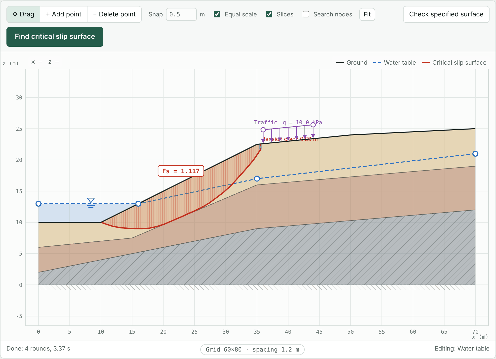
Chapter 14Stabilizing piles, micropiles and geosynthetics
When to use it
- Stabilizing piles: deep landslides where soil nails and anchors lack length or anchorage, and the shear and bending resistance of steel pipe piles is needed.
- Micropiles: road slopes with limited working space, where groups of small-diameter piles provide both axial and shear forces.
- Geosynthetics: reinforced fill slopes or reinforced earth walls with layers of geogrid or geotextile.
These three members are added on the Reinf. tab like soil nails and anchors, and their resistance always counts on the resisting side (passive).
14.1 Stabilizing piles
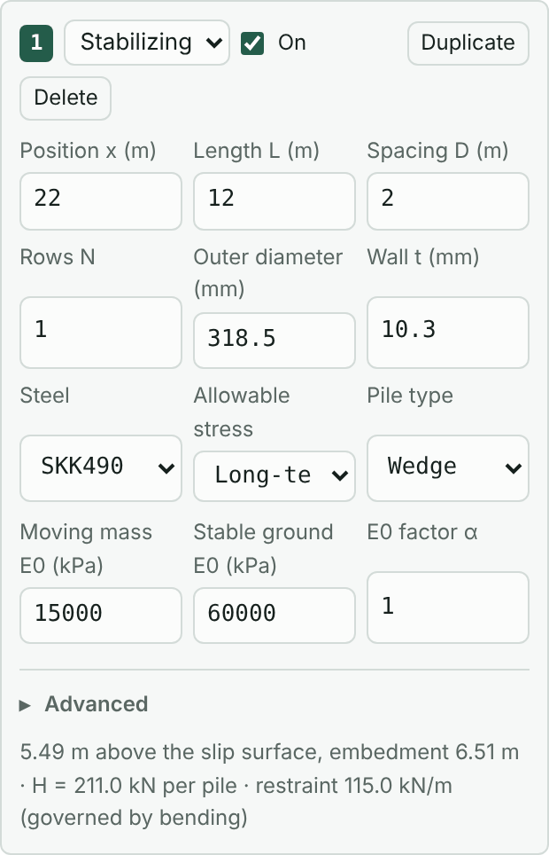
- On the Reinf. tab, press + Stabilizing pile, with position x = 22, length L = 12 m, spacing D = 2 m and one row (N = 1).
- Choose the pipe diameter, wall thickness, steel grade and allowable stress (long-term or short-term) for the design. The default is φ318.5×10.3 mm, SKK490, long-term.
- Pile type: a wedge pile (くさび杭) for the usual case with ground reaction below the slip surface; a restraint pile (抑え杭) where there is no ground reaction on the downslope side.
- The deformation moduli E0 of the moving and stable layers give the coefficients of horizontal subgrade reaction. Expand “Advanced” for other parameters.
- Press Find critical slip surface. The results list, for each pile, the length above the slip surface, the embedment, the horizontal load it can carry and the governing condition.
14.2 Stabilizing pile design
Stabilizing pile design on the Reinf. tab follows Japan's Technical Guidelines for Landslide Prevention (地すべり防止技術指針). On the critical surface without reinforcement it finds the required restraint force Pr that brings Fs to the planned safety factor, converts it to a design load per pile, and checks bending stress, shear stress, embedment length and ground yield.
- Press Find critical slip surface first.
- Enter 1.5 for the planned safety factor PFs and press Compute required restraint force and check piles.
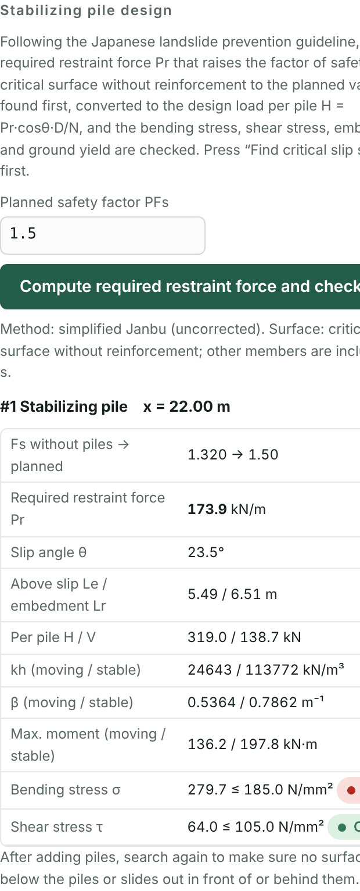
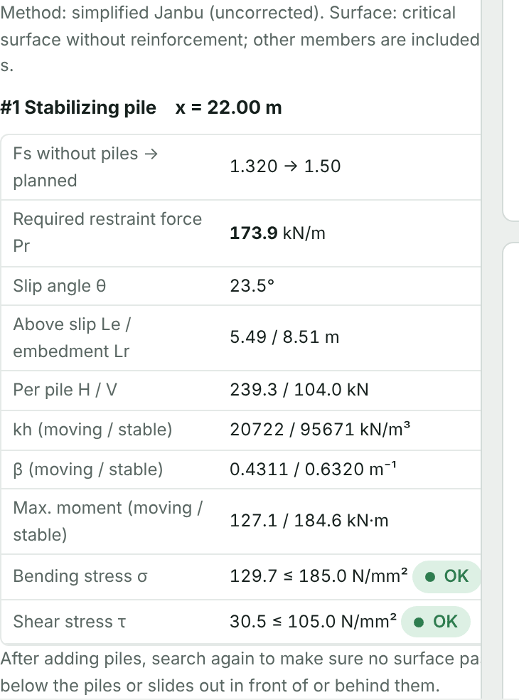
In the first design the required restraint force is Pr = 173.9 kN/m, H = 319 kN per pile, and the bending stress of 279.7 N/mm² exceeds the allowable 185 N/mm². With a φ406.4×12.7 mm pipe at 1.5 m spacing, the bending stress drops to 129.7 N/mm², but the embedment of 6.51 m is less than the 7.01 m needed. Increasing the pile length to 14 m makes all checks pass.
14.3 Micropiles and geosynthetics
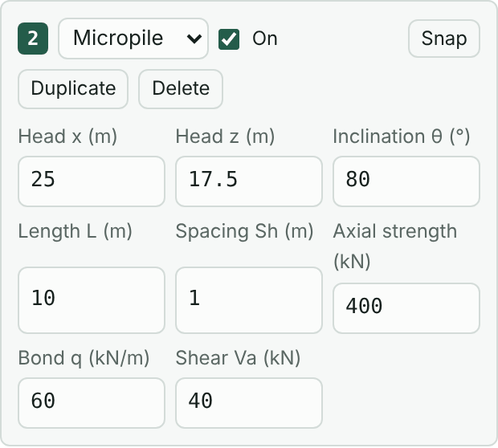
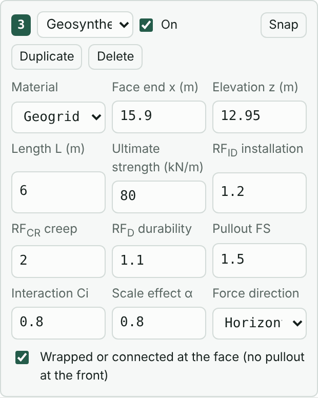
- Micropile: the axial force is the smaller of the bond q times the length beyond the slip surface and the axial strength, acting along the pile; the allowable shear Va acts across the pile. Both take the direction that resists sliding. An inclination θ below 90° leans into the slope.
- Geosynthetic: the allowable tension Ta = Tult/(RFID·RFCR·RFD) is compared with the pull-out resistance on both sides of the slip surface, taking the smaller. The force can act horizontally or along the slip surface. With “Wrapped or connected at the face” checked, the front end is not limited by pull-out. Use “Place a row” or “Copy” for multiple layers.
Chapter 15Calculation methods and search settings
When to use it
- The code or the reviewer requires a rigorous method that satisfies both force and moment equilibrium.
- The profile is long, the layers are thin, or the result looks unreasonable and the search grid needs adjusting.
- Very shallow surface slips should be excluded, or shallow failures examined.
15.1 Calculation methods
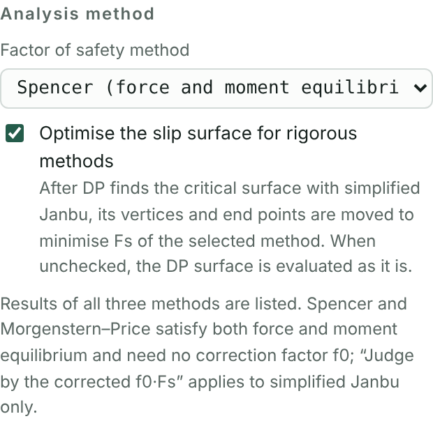
| Method | Equilibrium | Notes |
|---|---|---|
| Simplified Janbu | Force | The method of the original SSA program. Fast; the uncorrected value is conservative. Can be multiplied by the correction factor f0. |
| Spencer | Force and moment | Constant direction of interslice forces (f(x) = 1). |
| Morgenstern–Price | Force and moment | Interslice force direction follows a half-sine function. |
Whatever the method, DP first finds the critical surface with the simplified Janbu method. With a rigorous method, check Optimise the slip surface for rigorous methods and the program then moves the vertices and both ends of the surface to minimise the Fs of the selected method. The results list all three methods.
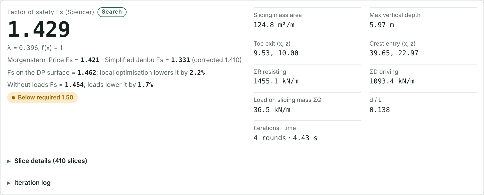
Correction factor f0
The simplified Janbu method ignores interslice shear and usually underestimates Fs. Two formulas are available for the correction factor f0: f0 = (50d/L)0.03 (PWRI report, 1987) and the Janbu correction curve. By default the uncorrected value is used, as in the original SSA program; check Judge by the corrected f0·Fs to use the corrected value. Rigorous methods need no f0.
15.2 Search grid
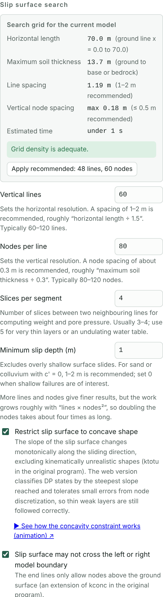
DP draws a set of vertical lines across the profile with a set of nodes on each. A slip surface is a polyline from the first line to the last, picking one node on each line.
| Setting | Recommendation |
|---|---|
| Vertical lines | Spacing 1 to 2 m, about horizontal length ÷ 1.5; usually 60 to 120. |
| Nodes per line | Node spacing about 0.3 m, about maximum layer thickness ÷ 0.3; usually 80 to 120. |
| Slices per segment | Usually 3 to 4; use 5 for very thin layers or an irregular water table. |
| Minimum slip depth | 1 to 2 m for sand or colluvium with c′ = 0; 0 when checking shallow failures. |
“Search grid for the current model” above estimates the line spacing, node spacing and computing time from the profile and offers an Apply recommended button. The grid button in the middle of the status bar also jumps here. The work grows roughly with lines × nodes², so doubling the nodes takes about four times as long.
- Restrict slip surface to concave shape: excludes kinematically unreasonable shapes; keep it checked.
- Slip surface may not cross the left or right model boundary: the end lines accept only nodes above the ground, so the surface does not exit through the model boundary.
- Check Search nodes on the toolbar to see the node positions on the drawing.
15.3 Convergence and judgment
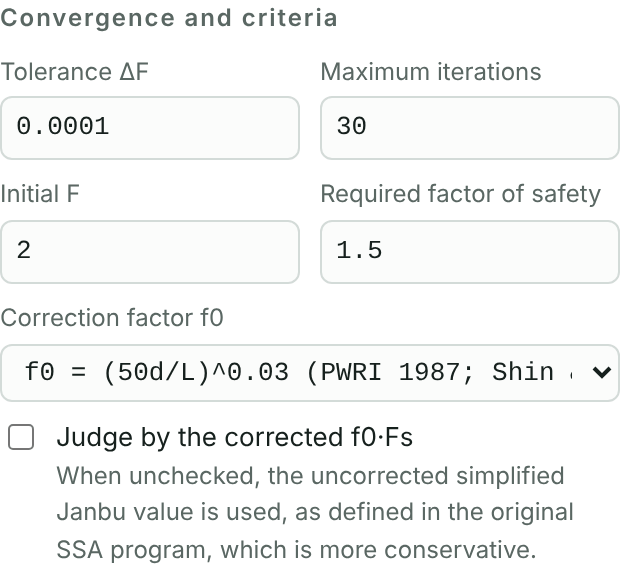
The tolerance ΔF, maximum iterations and initial F rarely need changing. The Required factor of safety is the criterion for the main view; the multi-case check uses the requirements on the Check tab.
Chapter 16Units, saving, verification report and versions
16.1 Units
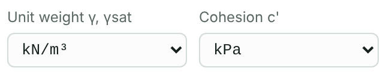
At the top of the Soils tab you can choose the unit of unit weight (kN/m³ or tf/m³) and of cohesion and stress (kPa or tf/m²) separately. Values already entered are converted automatically, and the results and report use the same units. 1 tf = 9.80665 kN.
16.2 Saving and exchange
- JSON model file: “Save model” and “Import model…” on the Settings tab, holding all input and settings (Section 8.3).
- CSV: terrain can be imported from CSV (Section 1.2); slice details and the multi-case summary can be copied as CSV.
- Report: Word or PDF (Chapter 8).
- Undo: Ctrl+Z or “Undo” at the top left goes back one step.
16.3 Verification report
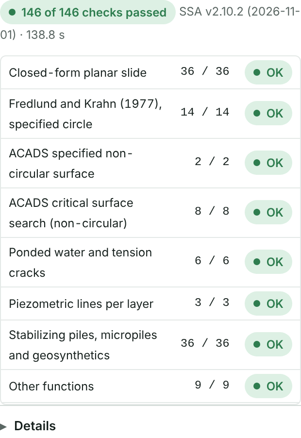
Run verification on the Help tab recomputes every verification problem in your browser with the current calculation core: closed-form solutions, Fredlund and Krahn, the ACADS benchmarks, ponded water and tension cracks, piezometric lines, reinforcement members, steel pipe pile examples and retaining wall external stability. It lists the reference value, this tool's result, the difference and pass or fail, and takes about three minutes. The result can be downloaded as Word or printed to PDF as program verification documentation for design review. In v2.10.2 all 146 checks pass.
16.4 Versions and languages
The program version appears next to the page title, in reports and in saved files. The version history on the Help tab lists the changes in each version. The cover of this manual states the program version it describes, and the manual is revised when the program gains features.
The buttons at the top right switch between 中文, English and 日本語, and reports are produced in the current language. This manual is also available in Chinese and Japanese.
AppendixFAQ and reference tables
A. Frequently asked questions
- I pressed Calculate but no slip surface was found.
- Check the message in the status bar first. Common causes: the ground line has fewer than 2 points; the model base is above the ground somewhere; the minimum slip depth is too large; control points or entry and exit ranges contradict each other. Try turning off the control points and setting the minimum slip depth to 0.
- The critical surface appears in a strange place, such as the model edge.
- Check that “Slip surface may not cross the left or right model boundary” is checked, and extend the profile far enough beyond the crest and toe (generally at least one slope height).
- Fs differs a lot from another program.
- First compare on the same slip surface (Chapter 10), then check the method, pore pressure, use of unit weights above and below the water table, the f0 correction and whether loads carry seismic inertia.
- Fs did not rise after adding reinforcement.
- Look at the reinforcement table in the results. “Does not cross the critical surface” means the slip surface moved outside the members; lengthen them or extend the layout.
- The Walls tab says the wall counts in global stability only.
- Walls with a custom shape defined by vertex coordinates cannot be checked for external stability. Enter the dimensions on the card to return to a parametric section.
- A case asks for Δh or kh.
- The water table rise for heavy rain and the seismic coefficient must be entered for each project; the program sets no default (Chapter 6).
- The model was gone after I closed the page.
- SSA does not store data on a server. Save with “Save model (JSON)” (Section 8.3).
B. Minimum factors of safety for slopes (defaults)
| Code (Taiwan) | Normal | Heavy rain / high water | Earthquake |
|---|---|---|---|
| Soil and Water Conservation Technical Regulations Art. 73, permanent | 1.5 | 1.2 | 1.1 |
| Soil and Water Conservation Technical Regulations Art. 73, temporary | 1.2 | 1.1 | 1.0 |
| Highway Slope Engineering Design Code Table 4.6-1, long-term | 1.5 | 1.2 | 1.1 |
| Highway Slope Engineering Design Code Table 4.6-1, temporary | 1.2 | 1.1 | 1.0 |
The requirements for retaining wall external stability are in Section 7.2. Codes may be revised; check the latest edition before use.
C. Example files
| File | Content | Used in |
|---|---|---|
| tutorial-profile.csv | Ground, layer boundaries and water table of the tutorial case | Chapter 1 |
| tutorial-1-slope.json | Profile, soil parameters and traffic load, no reinforcement | Chapter 4; start of each advanced chapter |
| tutorial-2-nails.json | With 8 soil nails 9 m long and three cases | Chapters 5 and 6 |
| tutorial-3-wall.json | With a gravity retaining wall at the toe | Chapters 7 and 8 |
| tutorial-report.docx, .pdf | Report for the tutorial case | Chapter 8 |
D. Terms and symbols
| Symbol | Meaning |
|---|---|
| Fs | Factor of safety, the ratio of resisting to driving forces |
| γ, γsat, γw | Unit weight, saturated unit weight, unit weight of water |
| c′, φ′ | Effective cohesion, effective friction angle |
| kh, kv | Horizontal and vertical seismic coefficients (pseudo-static) |
| ru | Pore pressure ratio |
| f0 | Correction factor of the simplified Janbu method |
| Δh | Water table rise in the heavy rain case |
| e, B | Eccentricity of the wall resultant, base width |
| Pr, PFs | Required restraint force, planned safety factor |
The full theory, equations and references are under “Theory and equations” at the bottom of the SSA page.
E. Contact and feedback
For questions, bug reports or feature suggestions, please email cychen59@gmail.com (Chen-Yu Chen).
This tool supports two-dimensional limit equilibrium analysis, and its results are for reference only. Engineering judgment and design remain the responsibility of qualified professionals, based on site investigation and the applicable codes.